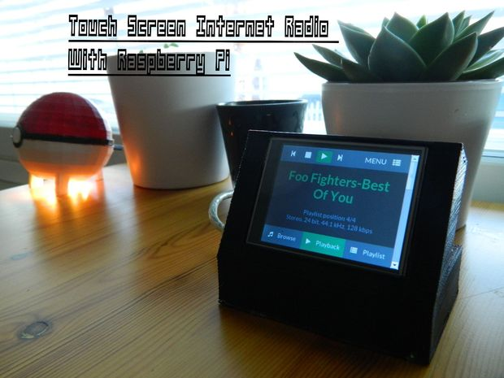
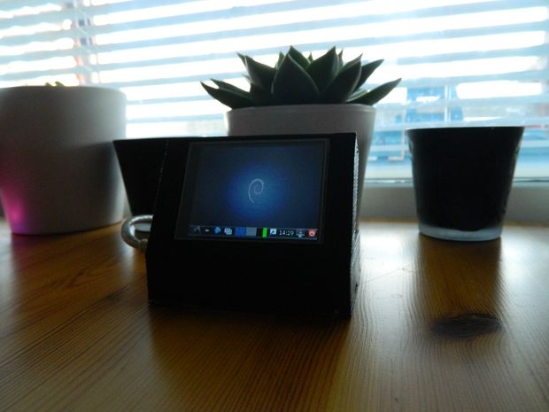
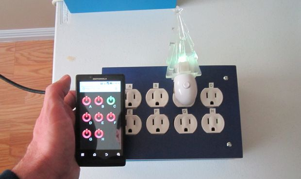

What is Raspberry Pi?
Under development since 2006, the Raspberry Pi is a small computer with the components mounted on a credit card sized motherboard, running a dedicated version of Linux.
Capable of offering basic office computing, low-level gaming, Internet and email access, media playback and many other features regularly expected from a computer in the 21st century, the Pi achieves all of this with a stripped-down component count, an ARM processor and a very low price.
Costs are kept so low by selling the computer without cables, storage or a case. Cables and storage are of course vital, and if you decide that you need a case, there are various solutions available.
The Raspberry Pi Foundation
The Raspberry Pi Foundation is a Charity set up with the aim of promoting the
study of computer science and related topics, especially at school level, and to
put the fun back into learning computing.
The foundation paired with
RS Components
and
Element 14
(Farnell) who
organised the manufacture and distribution of the devices under licence. 
The first 10,000 devices were made in China, however manufacture has now moved to the Sony Technology Centre in Pencoed in South Wales. In Oct 2013 they announced in October 2013 they have made 1,000,000 Raspberry Pi s
The Raspberry Pi
The Raspberry Pi is a credit
-
card sized computer based on the Broadcom BC2835
System on a Chip (SoC) which has a 32
-
bit
ARM 11 CPU
and a
Graphics Processor
,
its
RAM
memory is mounted directly above the CPU using
Package on Package

What is a Raspberry Pi? from Raspberry Pi Foundation on Vimeo.
How do I get started ?
1. Choose a suitable SD Card
The SD card needs to be at least 4GB in size and must be Class 4 or better.
The
Class
is shown in the small circle and indicates how fast the card is.
Before this card can be used with the Raspberry Pi computer, it must first be
formatted and loaded with an operating system. In most cases this is Linux...
2.
Format the SD Card
Download
SD Card Formatter
from the SD Card Association
www.sdcard.org
Insert the SD Card into your computer’s SD Card slot and format it
–
this utility
formats the whole card not just the partitions that are visible to Windows.

3. Download the Software
It is recommended that first time Raspberry Pi users should start by downloading the New Out of Box Software (NOOBS) software which is available from the Raspberry Pi website.4.Extract the Zip file onto the SD Card
Right Click the File and select Extract All – copy the files onto your SD Card
5. Connect a Display
The Raspberry Pi is designed to work with TVs and monitors with an HDMI input. It can also be used with analogue displays using composite video.VGA isn’t supported directly – there is an “official” adapter sold by Element 14

6. Connect a USB Keyboard and Mouse
The Raspberry Pi has two USB ports which are both used up just by plugging in a keyboard and mouse, a cordless keyboard and mouse is recommended !7.Connect to a Network
The Raspberry Pi can be connected via its built - in 10/100 MB Ethernet port to wired networks – A WiFi dongle is available from Element 14
A network connection isn’t essential but it makes updating and getting new software for your Raspberry Pi much easier.
8. Power Up
A micro USB power supply that can provide at least 700mA at 5V is required Many mobile phone and tablet chargers are suitable – check the label.9. Select Display and Localisation
On first boot NOOBS will resize the FAT partition to a minimum which allows it to create the partition required for the Installation – this is hidden from WindowsIf you can’t see anything on your display at this stage don’t worry – by default the Raspberry Pi will output to the HDMI port at the monitor’s preferred resolution.
Press 1 , 2 , 3 or 4 to select HDMI preferred mode , HDMI safe mode , PAL or NTSC
The display , language and keyboard settings are remembered between reboots and are automatically transferred to your chosen operating systems.
If you are connected to a wired network you can get help using the inbuilt web browser and automatically download the latest versions
10. Select an Operating System
Select the checkbox next to the Operating Systems you want to install using the mouse or keyboard (using the arrow keys and Enter ) and click Install (or press “ i ”)

11. Reboot
If you have chosen to install multiple Operating Systems you are given a boot menu on start up.
You can enter Recovery Mode on start up simply by holding down the Shift key
Setting up with Raspberry Pi
Setting up your Raspberry Pi from Raspberry Pi Foundation on Vimeo.
Some Cool Raspberry Pi Projects
Touch Screen Internet Radio using Raspberry Pi


Make this super easy and cool looking 2.8" touchscreen Internet Radio that can be controlled with PC, Smartphone and basically every machine that has got a browser and an internet connection..
Components list:
-Raspberry Pi, basically any one works from the first gen.
-Adafruit PiTfT touch screen
-Cable between the screen and raspberry.
For More Details Click Below Link
Touch screen internet radio
Web Controlled 8-Channel Powerstrip

Basically you can plug in up to 8 appliance and turn them on and off independantly from your smart phone! If you want to setup port-forwarding on your wireless router, you can control your appliances from anywhere in the world. (Although why you would want to turn on your blender from over-seas is a bit of a mystery.)
Assuming you already have your raspberry pi with the adapter and SD card, you should be able to round up the rest of the ingredients with $40-$50 dollars.
Here's what you're gonna need for this project:
- Raspberry Pi with SD Card
- Micro USB Power supply (Make sure your power supply can supply a full 1 amp)
- Project Box - Available at you local Target ($14.99) - Hurry these are seasonal!
- 8-Channel 5V Relay board - EBay (About $10 shipped, I found mine here.)
- 4 (qty) 15-Amp Power Receptacles (Lowe's or Home-Depot, get the cheap ones about 80 cents each)
- 18AWG Solid Hookup Wire (3 colors) - Radio Shack (About $8.50)
- Short length of 14-Gauge wire. (Only need about 15 inches of white, I found some scrap)
- Large wire-nuts (Red or bigger)
- Colored jumper wires - Female to Female buy them on EBay here.
- Power cord (I used an old computer power cord)
- Scrap wood pieces
- Double Stik tape
- 1/4" wood screws
- Optional (but handy): A female end of an extension cord or broken holiday-light set.
Trim or plunge-type router with 1/8" straight cutting bit.
Wire strippers
Drill & drill bits (various sizes)
Screwdrivers (various sizes)
Multi-meter (for testing circuitry)
Utility knife
For More Details Click Below Link
Web Controlled 8-Channel Powerstrip